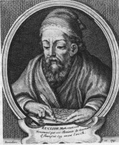
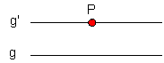
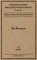

Euklid
Abgesehen von seinen unsicheren Lebensdaten 330-275 v.Chr wissen wir auch sonst wenig über ihn. Seine Elemente (einem dreizehnbändigen Kompedium des gesamten mathematischen Wissens jener Zeit) enthalten neben einer systematischen Darstellung der geometrischen Grundbegriffe auch alles, was zu seiner Zeit über die Zahlentheorie bekannt war. Hier steht auch der 'Fundamentalsatz der Arithmetik' zum ersten Mal: Jede natürliche Zahl >1 ist entweder eine Primzahl oder kann auf eindeutige Weise als Produkt von Primzahlen geschrieben werden.
Das Verfahren zur Bestimmung des grössten gemeinsamen Teilers wurde im 7.Buch seiner Elemente erstmals vorgestellt und ist seither unter dem Namen Euklidischer Algorithmus bekannt.
Euklid versuchte die Geometrie axiomatisch aufzubauen. Axiome können nicht mehr mathematisch bewiesen werden - sie müssen dann zum Beispiel empirisch verifiziert werden. Aus wenigen Axiomen wurde die gesamte 'euklidische Geometrie' aufgebaut, und diese war für ca. 2200 Jahre gültig. Eine lückenlose Axiomatik der Geometrie wurde 1899 von David Hilbert geliefert. Euklids Unsterblichkeit ist eng mit dem fünften seiner Postulate - dem Parallelenaxiom - verbunden.
Gegeben sei eine Gerade g und ein Punkt P, der nicht auf g liegt. Dann kann in der durch g und P bestimmten Ebene genau eine einzige Gerade g' durch P so gezogen werden, dass sich g und g' nicht schneiden.

Lobatschewsky bezweifelte nach 2200 Jahren dieses Axiom, und setzte nicht nur seinen Ruf als Wissenschaftler damit aufs Spiel. Seine nicht-euklidische Geometrie war nur die erste von mehreren, die von seinen Nachfolgern entworfen wurden (→ Riemann).
Euklids Elemente enthalten auch den Beweis, dass es unendlich viele Primzahlen gibt:
Beweis durch Gegenannahme (GA): Es gebe nur endlich viele Primzahlen.
Diese werden nun alle multipliziert zu einer grossen Zahl n = 2 · 3 · 5 · 7 · ...
Da n+1 grösser als jeder Faktor von n ist, so kann n+1 keine Primzahl sein. Daher muss einer der Faktoren von n auch Faktor von n+1 sein.
Aber dann hätte auch (n+1) - n = 1 diesen Faktor. Dies ist aber ein Widerspruch!
Also ist die GA falsch und es gibt unendlich viele Primzahlen.
Weitere Informationen zum Werk "Elemente" finden Sie in der pdf-Datei unter https://www.antike-griechische.de/Euklid.pdf.


Die Elemente, Buch 1-13
Euklid, C. Thaer